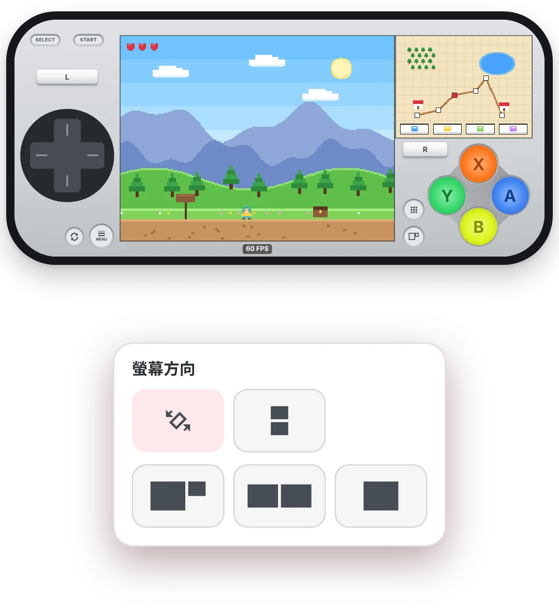
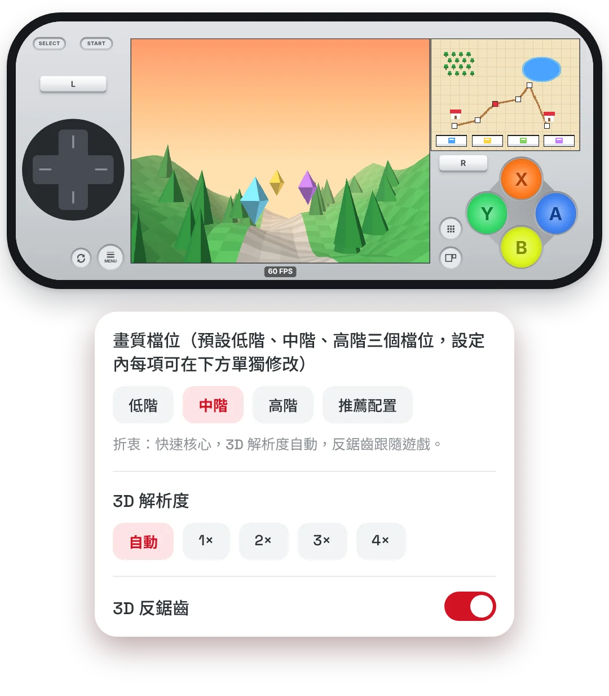

功能
CarloDS 是一款適用於 Android 手機與平板的 NDS 模擬器。其模擬核心完全自主研發，涵蓋 ARM9 與 ARM7 處理器、2D 與 3D 圖形、音訊、無線通訊及內建 BIOS，並依據大量實機測試結果逐項校準時序與畫面，力求重現原機表現。多數遊戲無需 BIOS 檔案即可執行，並支援 ZIP 格式。
自主研發的高精度核心
- 以實機測試結果為基準，逐項校正 CPU 時序、DMA、3D 繪製、抗鋸齒與裁切等細節
- 提供兩種核心精確核心最大程度貼近原機；快速核心採用 JIT 加速，多數遊戲執行速度大幅提升
- 內建 BIOS，無需另行準備；遊戲資料夾中如有使用者自備的 BIOS 與韌體檔案，將自動載入

遊戲庫
- 自動讀取遊戲圖示與名稱，支援子資料夾及 ZIP 檔案
- 提供搜尋、最近遊玩紀錄及「繼續遊戲」入口
- 支援為每款遊戲設定自訂封面
- 首次使用時可進行裝置效能檢測，自動建議最適合目前裝置的執行設定

螢幕配置與操作
- 支援直向、橫向大小螢幕、橫向左右並排及橫向單螢幕配置，可一鍵切換並交換主副螢幕
- 下螢幕支援觸控操作
- 螢幕方向可自由選擇
- 可隱藏螢幕按鍵，使用外接手把操作
- 支援模擬闔上與開啟機蓋（多數遊戲闔蓋後進入休眠）

畫質與效能
- 提供低階、中階、高階三種預設；完成效能檢測後，另提供針對目前裝置的建議設定
- 3D 算繪最高 4 倍解析度（支援自動），提供 3D 抗鋸齒、紋理平滑及 2D 平滑放大
- 算繪方式Software、OpenGL ES、Vulkan
- 畫面濾鏡平滑、LCD、掃描線、xBR、CAS 銳利化，並可調整亮度與對比
- 效能選項16 位元輸出、3D 多執行緒算繪、3D 指令加速、自動跳格
- 畫面、效能及手把按鍵設定均可依遊戲個別儲存
- 螢幕資訊顯示開機動畫、畫面更新率及詳細效能數據

存檔與工具
- 多個即時存檔欄位，讀檔後可復原；遊戲意外中斷時自動儲存進度
- 快轉（最高 4 倍）、倒帶（單次回退 5、10 或 15 秒）、連發（速度可調）
- 遊戲內快捷選單音量、快速存檔、截圖、機蓋、金手指、記憶體搜尋、倒帶，顯示項目可自訂
- 金手指支援 Action Replay 代碼，可匯入 usrcheat.dat、cheats.xml 資料庫及 .mch、.dct、.cht 與文字格式檔案
- 記憶體搜尋以浮動視窗執行，搜尋期間遊戲不中斷；支援記憶體檢視與寫入紀錄

無線連線與下載內容
- 本地無線連線同一 Wi‑Fi 網路下的裝置可直接連線；無路由器時可使用手機熱點
- 內建已停止服務的線上功能之替代服務，由本機為區域網路內的裝置提供（部分遊戲支援）
- 下載內容（實驗性功能）內建遊戲禮物與配信內容，無需連網即可領取

其他功能
- 支援 RetroAchievements 成就
- 雲端存檔透過 Google Drive 同步遊戲存檔
- 支援外接手把與鍵盤，所有按鍵皆可自訂
- 麥克風輸入用於需要吹氣或語音的遊戲，僅在遊戲執行期間錄音
- GBA 卡槽可搭配本團隊的 GBA 模擬器 RetroGenY 插入 GBA 遊戲，或模擬震動卡（使用裝置震動）
- DS 使用者資料暱稱、生日、喜愛顏色、留言及語言
- 問題回報可將執行紀錄透過郵件傳送給開發者